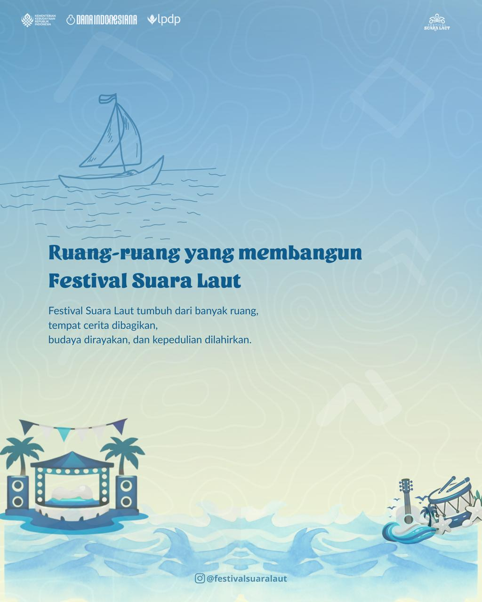
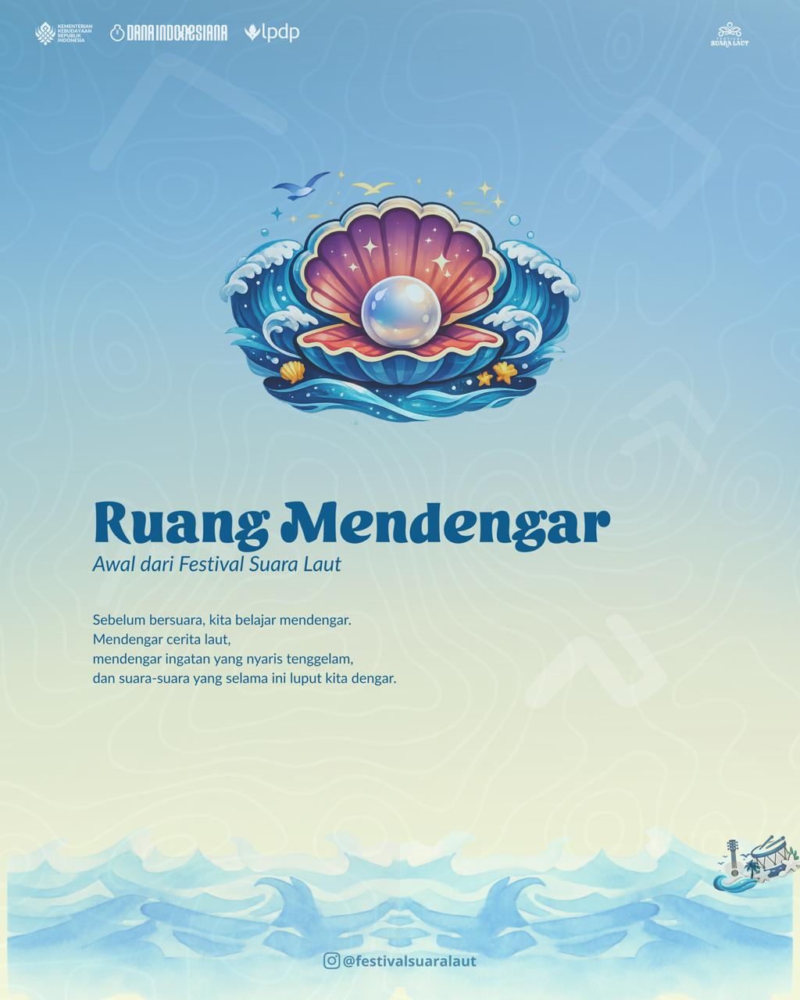
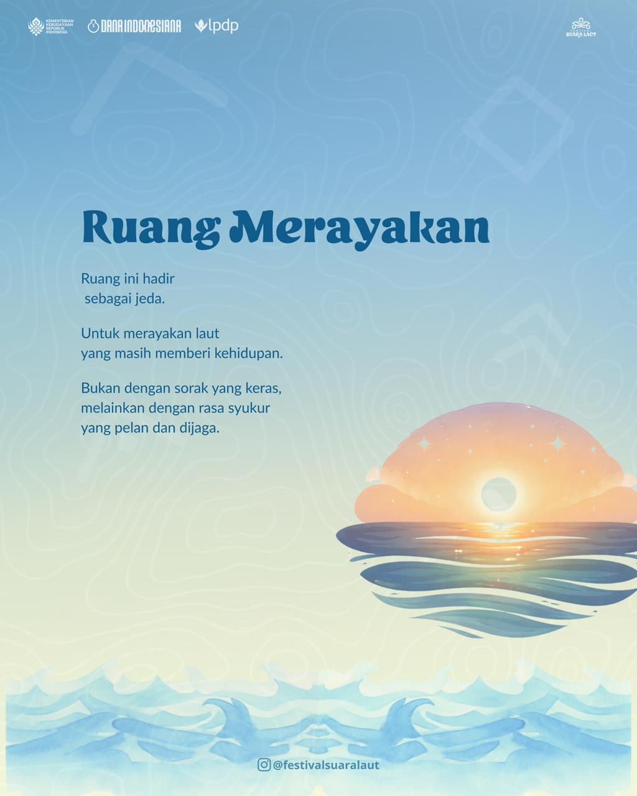
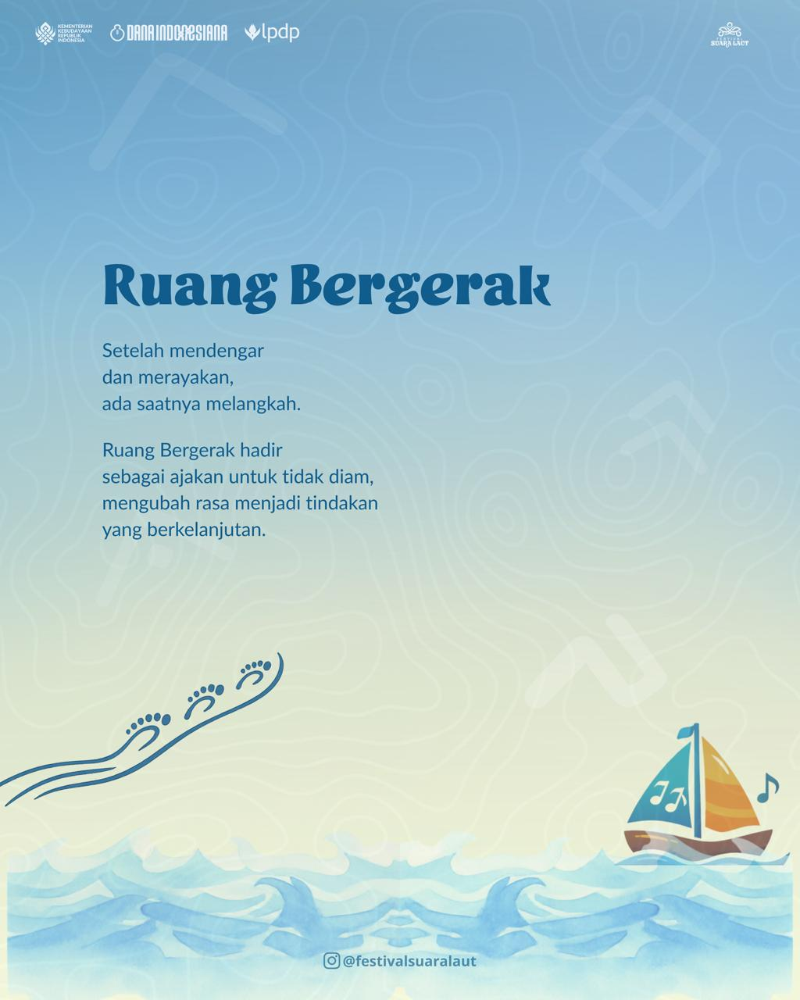

Festival Suara Laut
Festival Suara Laut
Festival Suara Laut
Festival Suara Laut
Festival Budaya & Lingkungan
Duka Laut, Duka Kita
17 - 19 April 2026
Manusia, Budaya, Lingkungan dan Suara Kita
Festival Suara Laut adalah sebuah kegiatan budaya berbasis partisipasi masyarakat yang bertujuan mengangkat keterhubungan antara manusia, budaya, dan laut sebagai sumber kehidupan. Festival ini lahir dari kegelisahan atas semakin renggangnya relasi masyarakat dengan praktik kebudayaan yang reflektif, serta menurunnya kesadaran kolektif terhadap pentingnya menjaga laut sebagai ruang hidup bersama.
Mengangkat tema “Duka Laut, Duka Kita”, festival ini ingin menegaskan bahwa krisis lingkungan bukanlah persoalan yang jauh, melainkan dekat dan menyentuh kehidupan sehari-hari masyarakat. Kerusakan laut adalah duka bersama-duka manusia, budaya, dan masa depan. Tema ini ingin menjadi pengingat bahwa ketika laut terluka,dampaknya dirasakan secara sosial, ekonomi, budaya, dan ekologis, sehingga hubungan manusia dengan laut perlu kembali disuarakan dan dirawat dengan kesadaran, penghormatan, dan aksi nyata.




Teater, musik, dan ekspresi tradisi.
Selengkapnya ↓
Percakapan lintas komunitas.
Selengkapnya ↓
Langkah nyata keberlanjutan.
Selengkapnya ↓
Festival Suara Laut berkomitmen sebagai festival budaya rendah karbon.
Menerapkan pemilahan sampah, pengurangan plastik sekali pakai, serta edukasi pengelolaan sampah berbasis komunitas selama festival berlangsung.
Menghitung jejak karbon kegiatan festival dan melakukan penanaman mangrove sebagai bentuk tanggung jawab ekologis bersama.
Menghadirkan diskusi, pameran, dan kampanye kreatif untuk menumbuhkan kesadaran menjaga laut dan lingkungan.
Untuk kolaborasi dan informasi lebih lanjut
Kabupaten Bone, Sulawesi Selatan